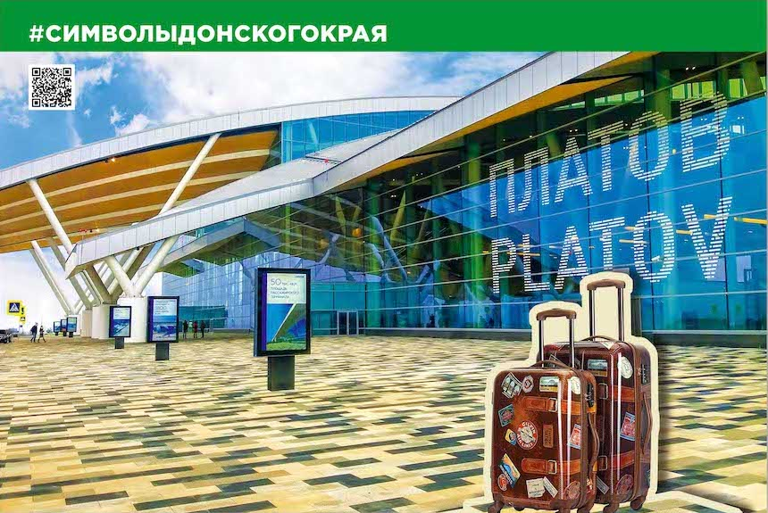

В декабре 2017 года введен в эксплуатацию новый международный аэропорт Ростова-на-Дону, расположенный в 29 км северо-восточнее Ростова-на-Дону, в 15 км северо-западнее города Новочеркасска, вблизи федеральной автотрассы М-4.
Новый аэропорт построен в рамках подготовки к Чемпионату мира по футболу 2018. Проектировало аэропорт британское бюро Twelve Architects (Твелв Акитекс) и его архитектор Алекс Битус, по словам которого, в основу концепции легла река Дон, её волны и мосты.
Проект реализован на основе государственно-частного партнерства, строительство объекта велось 3 года.
Аэропорт назван в честь атамана Донского казачьего войска Матвея Платова.
«Платов» – крупнейший аэропорт на территории Южного федерального округа. Общая площадь пассажирского терминала составляет 50 тыс. кв. м. Пропускная способность воздушной гавани около 1,8 тыс. пассажиров в час, количество телескопических трапов – 9, парковка рассчитана на 2500 машино-мест, обработка грузов составляет 20 тыс. тонн в год. Взлетно-посадочная полоса способна принимать все типы современных средне- и дальнемагистральных воздушных судов.
Панорамное остекление здания составляет 15 тыс. кв. м. В остеклении используется стекло с нанонапылением. Это стекло отличается высоким светопропусканием и в то же время обладает прекрасными солнцезащитными и энергоэффективными свойствами.
В новой авиагаване доступны все необходимые пассажирские сервисы. Имеются два зала повышенной комфортности: для тех, кто летит за рубеж и для пассажиров внутрироссийских маршрутов. Дизайнеры реализовали проект «Степь» в зале для пассажиров российских рейсов и проект «Солнце. Воздух. Берега» в зале для тех, кто вылетает международными рейсами. Аэровокзальный комплекс представляет собой современную и стильную воздушную гавань.
Аэропорт «Платов» является лучшим российским аэропортом с точки зрения транспортной безопасности, в нём работает современное оборудование, используемое для досмотра, а показатели безопасности соответствуют требованиям стандартов Европейской конференции гражданской авиации. Для досмотра багажа используются томографы производителя Morpho Detection. Это первый случай использования в России автоматических систем на основе компьютерной томографии. Багажный конвейер позволяет осматривать 1800 единиц багажа за один час. Подобные системы используются в аэропортах США, Канады, Японии, Великобритании, Германии и в ряде отечественных столичных аэропортов.